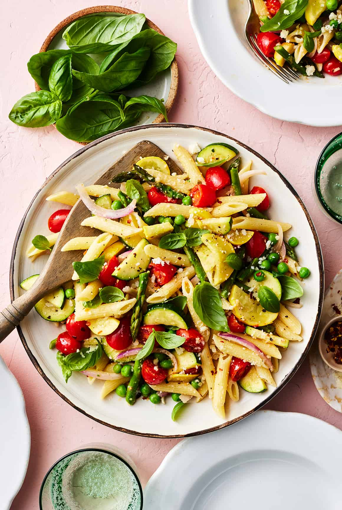

Pasta Primavera

Description
A delicious pasta dish brimming with seasonal vegetables. Named primavera which is Italian for spring, as this is traditionally a seasonal dish.
Ingredients
- 10 ounces penne pasta
- 2 tablespoons extra-virgin olive oil, plus more for drizzling
- 4 garlic cloves, sliced
- 1 yellow squash, sliced into thin half-moons
- 1 zucchini, sliced into thin half-moons
- 1 bunch asparagus, chopped into 1-inch pieces
- 1 cup cherry tomatoes, halved
- 1 cup thinly sliced red onion
- 1 teaspoon sea salt
- ½ cup frozen peas, thawed
- ¾ cup grated pecorino cheese
- 3 tablespoons fresh lemon juice
- Red pepper flakes
- 1 cup fresh basil leaves, plus more for garnish
- ¼ cup fresh tarragon, optional
- Freshly ground black pepper
Steps
- Bring a large pot of salted water to a boil. Prepare the pasta according to the package instructions, cooking until al dente. Drain and toss with a drizzle of olive oil to prevent sticking.
- Heat the oil in a large, deep skillet over medium heat. Add the garlic, squash, zucchini, asparagus, tomatoes, onion, salt, and several grinds of pepper and sauté for 3 to 4 minutes, or until the vegetables are tender.
- Add the pasta, peas, cheese, lemon juice, and a pinch of red pepper flakes and toss to combine. Stir in the basil and tarragon, if using.
- Season to taste, garnish with more basil, and serve.
Home